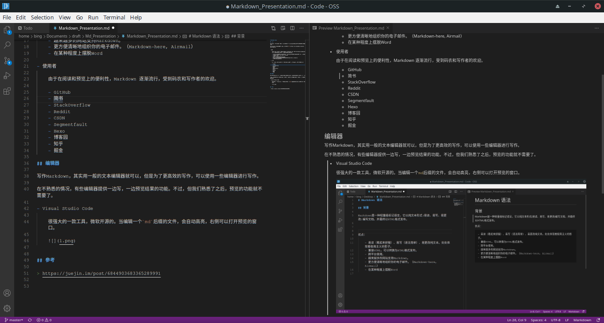
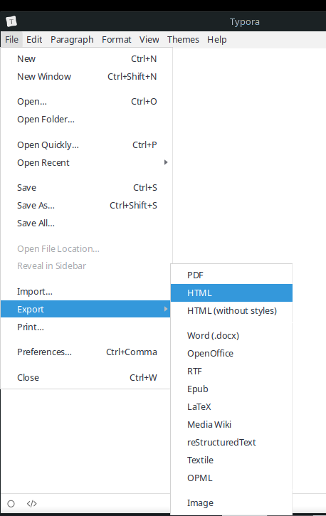
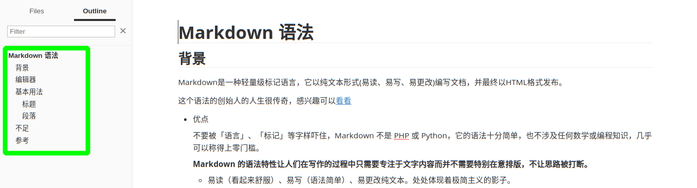
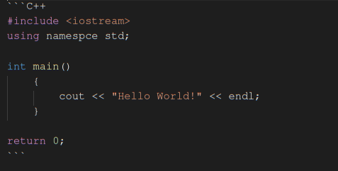
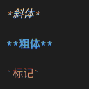
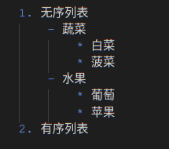
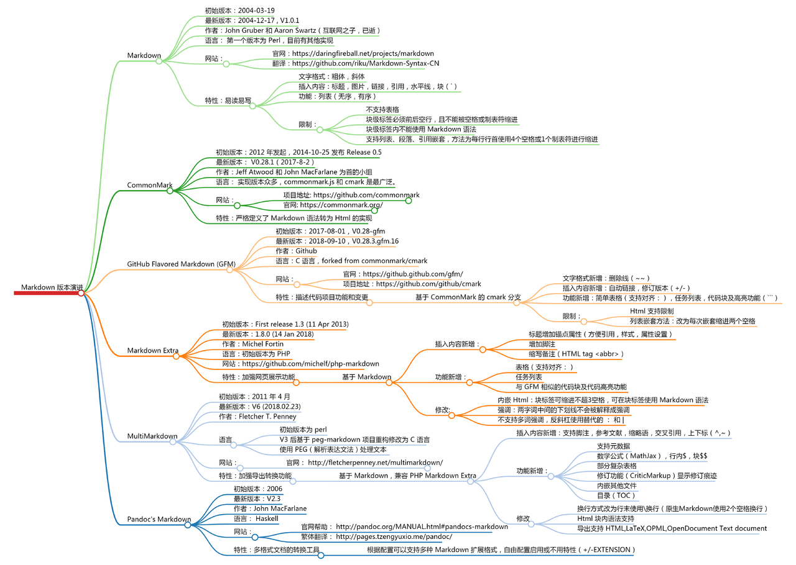

背景
Markdown是一种轻量级标记语言，它以纯文本形式(易读、易写、易更改)编写文档，并最终以HTML格式发布。
这个语法的创始人的人生很传奇，感兴趣可以看看
一种
轻量级的标记语言与 HTML （HyperText Markup Language）相对（Markdown）。2004 年创建，它允许人们使用易读易写的纯文本格式编写文档，然后转换成有效的XHTML（或者HTML）文档
官网
作者
John Gruber & Aaron Swartz
其他标记文档
reStructuredText (RST，ReST，reST)
是另一种用于文本数据的文件格式，主要用于 Python 编程语言社区的技术文档
演示
优点
不要被「语言」、「标记」等字样吓住，Markdown 不是 PHP 或 Python，它的语法十分简单，也不涉及任何数学或编程知识，几乎可以称得上零门槛。Markdown 的语法特性让人们在写作的过程中只需要专注于文字内容而并不需要特别在意排版，不让思路被打断。
- 易读（看起来舒服）、易写（语法简单）、易更改纯文本。处处体现着极简主义的影子。
- 兼容HTML，可以转换为HTML格式发布。
- 跨平台使用。
- 越来越多的网站支持Markdown。
- 更方便清晰地组织你的电子邮件。（Markdown-here, Airmail）
- 在某种程度上摆脱Word
使用者
由于在阅读和预览上的便利性，Markdown 逐渐流行，受到码农和写作者的欢迎。支持网站
- GitHub
- StackOverflow
- CSDN
- Segmentfault
- Hexo
- 博客园
- 知乎
- 掘金
- 简书
笔记工具
- 印象笔记
- 有道云笔记
- 为知笔记
文档 & 知识库
- 语雀
- Gitbook
- docsify
例子：
编辑器
写作Markdown，其实用一般的文本编辑器就可以，但是为了更高效的写作，可以使用一些编辑器进行写作。
在不熟悉语法的情况，有些编辑器提供一边写，一边预览结果的功能。不过，在我们熟悉了之后，预览的功能就不需要了。
Markdown 文档的后缀是 .md，我们可以用下面提及的工具来打开浏览以及编辑
Visual Studio Code
很强大的一款工具，微软开源的。当编辑一个md后缀的文件，会自动高亮，右侧可以打开预览的窗口。

Typora
这是一个所见即所得的编写工具，免费。Windows 和 Linux 平台均可安装此软件。安装插件后，可以导出为PDF，HTML，图片等格式

Cmd Markdown
在线Web写作平台，可以编写预览，导出需要注册帐号。可以作为临时渲染使用。
Stackedit & Dillinger
这两个是国外免费的，部分高级功能付费使用，但是导出不需要注册，很方便。
基本用法
前面说过，Markdown是很简洁的一个工具，所以上手并不难。自己先看看然后动手练练写一篇文章估计就能掌握了
Markdown语法主要分为如下几大部分： 标题，段落，区块引用，代码区块，强调，列表，分割线，链接，图片，反斜杠 \ ，符号 `
标题
#代表标题的级别，一级标题是最大的。
请在井号和标题文本之间添加一个空格
# 一级标题
## 二级标题
### 三级标题
#### 四级标题
##### 五级标题
###### 六级标题很多渲染器根据标题来生成outline的

段落
段落的前后要有空行，所谓的空行是指没有文字内容。若想在段内强制换行的方式是使用两个以上空格加上回车（引用中换行省略回车）
为了兼容性，请在行尾添加HTML 的 <br> 标签来实现换行。
区块引用
在段落的每行或者只在第一行使用符号 >， 还可使用多个嵌套引用，如：
> 区块引用
>> 嵌套引用例子：
其实全部都是我说的 ——鲁迅
代码块
这个是Markdown的一大特色，毕竟是给程序员用的。在代码块里面的内容都会按照你编写的样式显示，不会进行任何改动。
你可以加上代码所属的语言，渲染后会自动代码高亮。
使用方法如下：

效果如下：
#include <iostream>
using namespce std;
int main()
{
cout << "Hello World!" << endl;
}
return 0;强调

效果如下：
斜体
粗体
标记
列表
列表分为无序和有序列表，
使用*，+，-标记无序列表。
有序列表的标记方式是将上述的符号换成数字,并辅以.
符号和文字之间有空格。序列中还能继续嵌套序列

效果如下：
- 无序列表
- 蔬菜
- 白菜
- 菠菜
- 水果
- 葡萄
- 苹果
- 蔬菜
- 有序列表
分割线
三个或三个以上 * ，_ ， -
链接
格式如下：
[Google](https://www.google.com/)效果：
图片
格式和链接部分差不多，多加一个 ! 就行
如果是本地图片，一般将图片放在MD文档的同目录下面，直接引用
调整图片大小，可以用html的语法
<img src="2.png" width = "100" height = "100">其他
代办列表: 表示列表是否勾选状态（注意：[ ] 前后都要有空格）
并不是所有的渲染器都支持
- [] 不勾选
- [x] 勾选不足
每个东西都有它的优缺点。Markdown 也不例外。
版本众多，语法可能有所不同

每个软件(渲染器)解释不一样，最后出来的效果(HTML)样式也不一样
在需要复杂(自定义)功能时，可能无法提供。例如：改变字体颜色，只能借助HTML语法
参考
https://juejin.im/post/6844903683365289991
https://www.ifanr.com/1318978
https://juejin.im/post/6844903683365289991#heading-1
https://github.com/younghz/Markdown